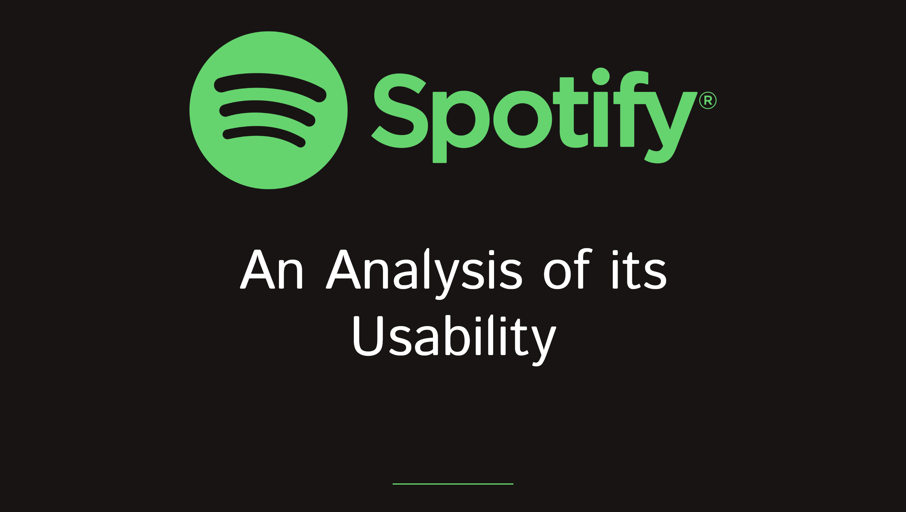
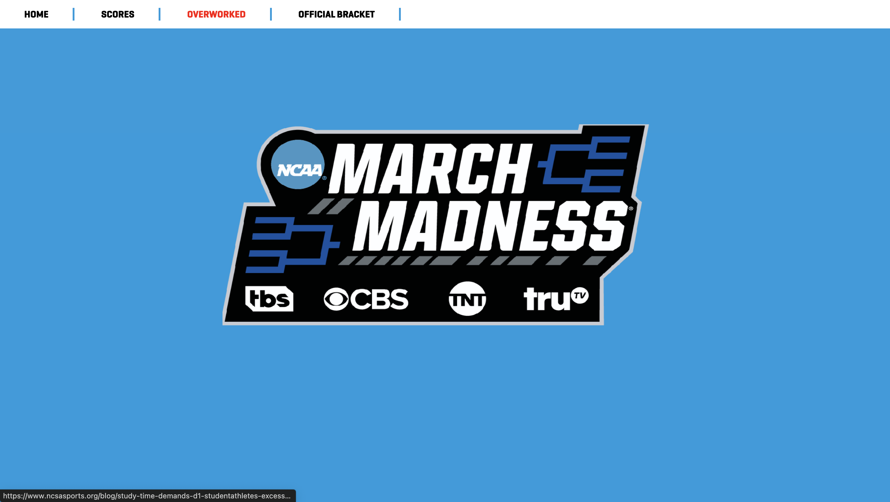
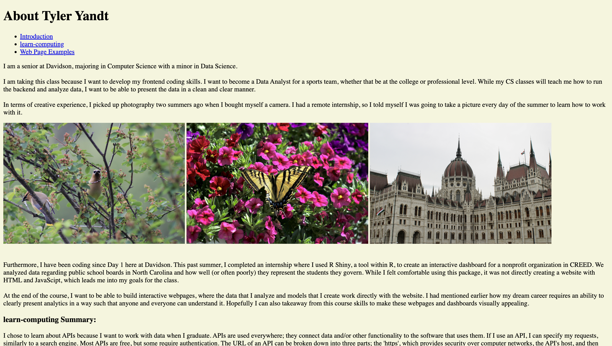

Critical Web Design Portfolio
Below are the projects that I completed over the course of the semester in Davidson College's Critical Web Design course, taught by Owen Mundy. If you click on an image of the page, it will you take you there to explore for yourself.
Critical Web Design Final
Task: Design and program a web application as a creative response to content from the course.
My partner and I used mathematical methods found in Large Language Models (LLMS) to train a model to randomly generate a fortune.
Regenerative Design
Task: Create a web page that can generate new iterations of itself based on some changeable data source. This could be input from the user, other available data, or pure randomness.
My friends taught me a word gamed called "GHOST" and I used that concept for this project. It's you vs. the computer; whoever finishes the spelling of a word loses the round.

Usability Test
Task: Create and conduct a usability test, compile the data, and then design and code a page to display the results.
My group chose Spotify's website as our focus. I used the color schemes that Spotify uses in their website in my display of our results.

On the Grid
Task: Use Bootstrap's frameworks to create a responsive grid-based design.
I recreated the layout of a news site to demonstrate my abilities to use bootstrap's framework.

Unbranding
Task: Reimagine a corporate message using critical web design.
I decided to rebrand the message of "March Madness." Although "March Madness" may not be a corporation, I wanted to highlight the concerns surrounding the mental health of student athletes and the pressures that they face.

View Source
Task: Design and code a concrete poem using HTML/CSS/JS. Exhibit good development practices using browser DevTools.
By far the most tedious project, I recreated the album cover of Mac Miller's Swimming using the lyrics to one of his songs on the album. This was extremely tedious because I assigned the colors to the specific words by hand.

Hello World
Task: Practice using VSCode, Git, and GitHub to write, track, and publish a website.
This was my first introduction to front-end development using HTML and CSS.